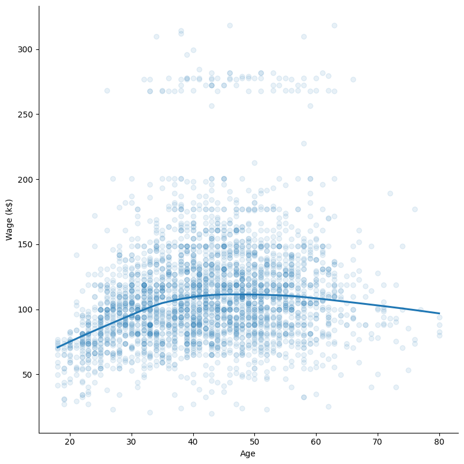
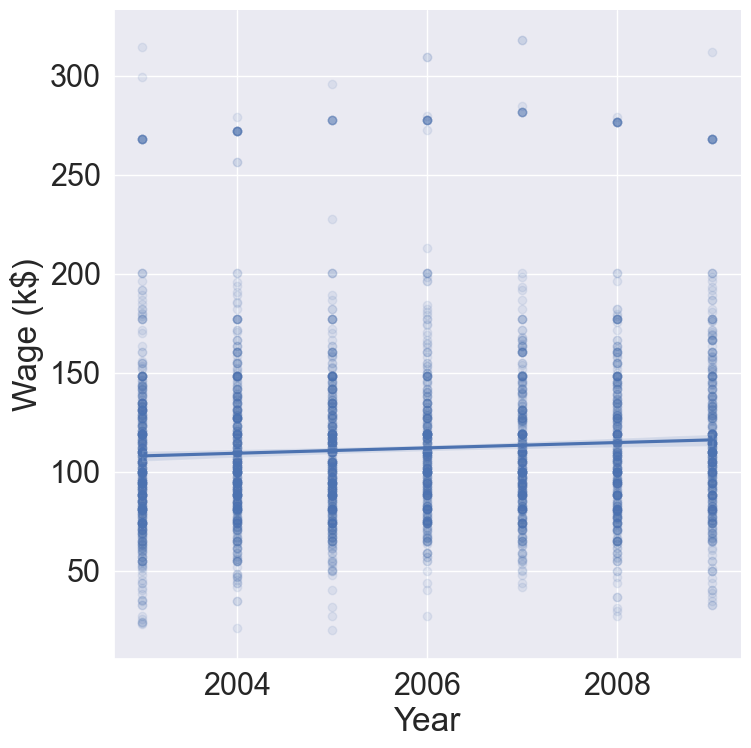
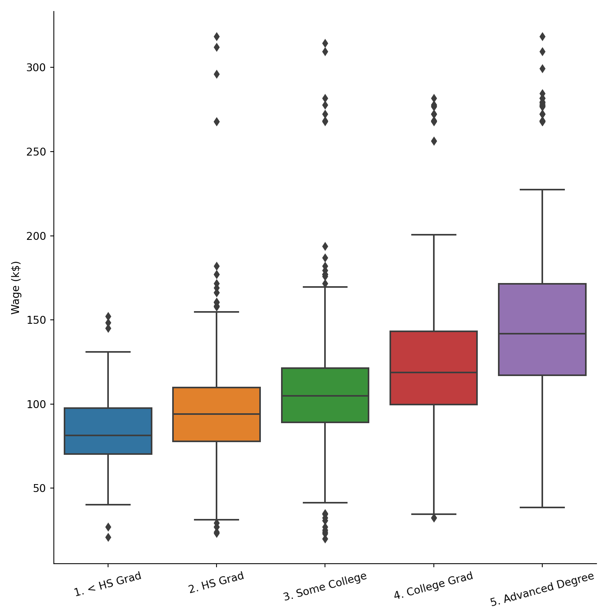
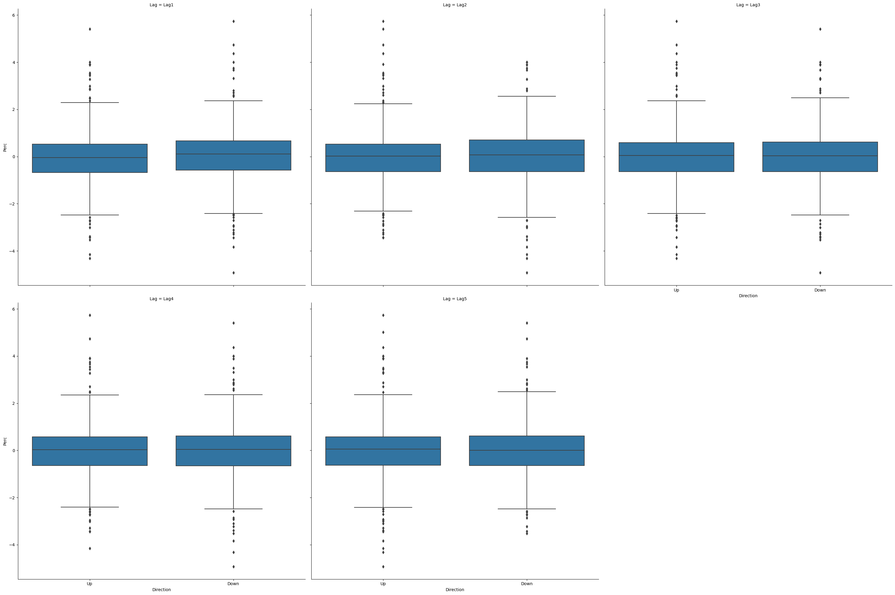

R version 4.2.2 (2022-10-31)
Platform: x86_64-apple-darwin17.0 (64-bit)
Running under: macOS Big Sur ... 10.16
Matrix products: default
BLAS: /Library/Frameworks/R.framework/Versions/4.2/Resources/lib/libRblas.0.dylib
LAPACK: /Library/Frameworks/R.framework/Versions/4.2/Resources/lib/libRlapack.dylib
locale:
[1] en_US.UTF-8/en_US.UTF-8/en_US.UTF-8/C/en_US.UTF-8/en_US.UTF-8
attached base packages:
[1] stats graphics grDevices utils datasets methods base
loaded via a namespace (and not attached):
[1] Rcpp_1.0.9 here_1.0.1 lattice_0.20-45 png_0.1-8
[5] rprojroot_2.0.3 digest_0.6.30 grid_4.2.2 lifecycle_1.0.3
[9] jsonlite_1.8.4 magrittr_2.0.3 evaluate_0.18 rlang_1.0.6
[13] stringi_1.7.8 cli_3.4.1 rstudioapi_0.14 Matrix_1.5-1
[17] reticulate_1.26 vctrs_0.5.1 rmarkdown_2.18 tools_4.2.2
[21] stringr_1.5.0 glue_1.6.2 htmlwidgets_1.6.0 xfun_0.35
[25] yaml_2.3.6 fastmap_1.1.0 compiler_4.2.2 htmltools_0.5.4
[29] knitr_1.41
usingInteractiveUtilsversioninfo()
In this class, we use the phrases statistical learning, machine learning, or learning interchangeably.
1 Overview of statistical learning
1.1 Supervised vs unsupervised learning
Supervised learning: input(s) -> output.
Prediction: the output is continuous (income, weight, bmi, …).
Classification: the output is categorical (disease or not, image, pattern recognition, …).
Unsupervised learning: no output. We learn relationships and structure in the data.
Clustering.
Dimension reduction.
1.2 Supervised learning
Predictors \[
X = \begin{pmatrix} X_1 \\ \vdots \\ X_p \end{pmatrix}.
\] Also called inputs, covariates, regressors, features, independent variables.
Outcome \(Y\) (also called output, response variable, dependent variable, target).
In the regression problem, \(Y\) is quantitative (price, weight, bmi).
In the classification problem, \(Y\) is categorical. That is \(Y\) takes values in a finite, unordered set (survived/died, digit 0-9, object in image, cancer class of tissue sample).
We have training data \((\mathbf{x}_1, y_1), \ldots, (\mathbf{x}_n, y_n)\). These are observations (also called samples, instances, cases). Training data is often represented by a predictor matrix \[
\mathbf{X} = \begin{pmatrix}
x_{11} & \cdots & x_{1p} \\
\vdots & \ddots & \vdots \\
x_{n1} & \cdots & x_{np}
\end{pmatrix} = \begin{pmatrix} \mathbf{x}_1^T \\ \vdots \\ \mathbf{x}_n^T \end{pmatrix}
\tag{1}\] and a response vector \[
\mathbf{y} = \begin{pmatrix} y_1 \\ \vdots \\ y_n \end{pmatrix}
\]
Based on the training data, our goal is to
Accurately predict unseen outcome of test cases based on their predictors.
Understand which predictors affect the outcome, and how.
Assess the quality of our predictions and inferences.
1.2.1 Example: salary
The Wage data set collects the wage and other data for a group of 3000 male workers in the Mid-Atlantic region in 2003-2009.
Our goal is to establish the relationship between salary and demographic variables in population survey data.
Since wage is a quantitative variable, it is a regression problem.
year age maritl race education \
count 3000.000000 3000.000000 3000 3000 3000
unique NaN NaN 5 4 5
top NaN NaN 2. Married 1. White 2. HS Grad
freq NaN NaN 2074 2480 971
mean 2005.791000 42.414667 NaN NaN NaN
std 2.026167 11.542406 NaN NaN NaN
min 2003.000000 18.000000 NaN NaN NaN
25% 2004.000000 33.750000 NaN NaN NaN
50% 2006.000000 42.000000 NaN NaN NaN
75% 2008.000000 51.000000 NaN NaN NaN
max 2009.000000 80.000000 NaN NaN NaN
region jobclass health health_ins \
count 3000 3000 3000 3000
unique 1 2 2 2
top 2. Middle Atlantic 1. Industrial 2. >=Very Good 1. Yes
freq 3000 1544 2142 2083
mean NaN NaN NaN NaN
std NaN NaN NaN NaN
min NaN NaN NaN NaN
25% NaN NaN NaN NaN
50% NaN NaN NaN NaN
75% NaN NaN NaN NaN
max NaN NaN NaN NaN
logwage wage
count 3000.000000 3000.000000
unique NaN NaN
top NaN NaN
freq NaN NaN
mean 4.653905 111.703608
std 0.351753 41.728595
min 3.000000 20.085537
25% 4.447158 85.383940
50% 4.653213 104.921507
75% 4.857332 128.680488
max 5.763128 318.342430
# Plot wage ~ agesns.lmplot( data = Wage, x ="age", y ="wage", lowess =True, scatter_kws = {'alpha' : 0.1} ).set( xlabel ='Age', ylabel ='Wage (k$)' )

Figure 1: Wage changes nonlinearly with age.
# Plot wage ~ yearsns.lmplot( data = Wage, x ="year", y ="wage", scatter_kws = {'alpha' : 0.1} ).set( xlabel ='Year', ylabel ='Wage (k$)' )

Figure 2: Average wage increases by $10k in 2003-2009.
# Plot wage ~ educationg = sns.boxplot( data = Wage, x ="education", y ="wage", )g.set( xlabel ='Education', ylabel ='Wage (k$)' )g.set_xticklabels(g.get_xticklabels(), rotation =15)

Figure 3: Wage increases with education level.
library(ISLR2)library(tidyverse)# Convert to tibbleWage <-as_tibble(Wage) %>%print(width =Inf)
# A tibble: 3,000 × 11
year age maritl race education region
<int> <int> <fct> <fct> <fct> <fct>
1 2006 18 1. Never Married 1. White 1. < HS Grad 2. Middle Atlantic
2 2004 24 1. Never Married 1. White 4. College Grad 2. Middle Atlantic
3 2003 45 2. Married 1. White 3. Some College 2. Middle Atlantic
4 2003 43 2. Married 3. Asian 4. College Grad 2. Middle Atlantic
5 2005 50 4. Divorced 1. White 2. HS Grad 2. Middle Atlantic
6 2008 54 2. Married 1. White 4. College Grad 2. Middle Atlantic
7 2009 44 2. Married 4. Other 3. Some College 2. Middle Atlantic
8 2008 30 1. Never Married 3. Asian 3. Some College 2. Middle Atlantic
9 2006 41 1. Never Married 2. Black 3. Some College 2. Middle Atlantic
10 2004 52 2. Married 1. White 2. HS Grad 2. Middle Atlantic
jobclass health health_ins logwage wage
<fct> <fct> <fct> <dbl> <dbl>
1 1. Industrial 1. <=Good 2. No 4.32 75.0
2 2. Information 2. >=Very Good 2. No 4.26 70.5
3 1. Industrial 1. <=Good 1. Yes 4.88 131.
4 2. Information 2. >=Very Good 1. Yes 5.04 155.
5 2. Information 1. <=Good 1. Yes 4.32 75.0
6 2. Information 2. >=Very Good 1. Yes 4.85 127.
7 1. Industrial 2. >=Very Good 1. Yes 5.13 170.
8 2. Information 1. <=Good 1. Yes 4.72 112.
9 2. Information 2. >=Very Good 1. Yes 4.78 119.
10 2. Information 2. >=Very Good 1. Yes 4.86 129.
# … with 2,990 more rows
# Summary statisticssummary(Wage)
year age maritl race
Min. :2003 Min. :18.00 1. Never Married: 648 1. White:2480
1st Qu.:2004 1st Qu.:33.75 2. Married :2074 2. Black: 293
Median :2006 Median :42.00 3. Widowed : 19 3. Asian: 190
Mean :2006 Mean :42.41 4. Divorced : 204 4. Other: 37
3rd Qu.:2008 3rd Qu.:51.00 5. Separated : 55
Max. :2009 Max. :80.00
education region jobclass
1. < HS Grad :268 2. Middle Atlantic :3000 1. Industrial :1544
2. HS Grad :971 1. New England : 0 2. Information:1456
3. Some College :650 3. East North Central: 0
4. College Grad :685 4. West North Central: 0
5. Advanced Degree:426 5. South Atlantic : 0
6. East South Central: 0
(Other) : 0
health health_ins logwage wage
1. <=Good : 858 1. Yes:2083 Min. :3.000 Min. : 20.09
2. >=Very Good:2142 2. No : 917 1st Qu.:4.447 1st Qu.: 85.38
Median :4.653 Median :104.92
Mean :4.654 Mean :111.70
3rd Qu.:4.857 3rd Qu.:128.68
Max. :5.763 Max. :318.34
library(quantmod)SP500 <-getSymbols("^GSPC", src ="yahoo", auto.assign =FALSE, from ="2022-01-01",to ="2022-12-31")chartSeries(SP500, theme =chartTheme("white"),type ="line", log.scale =FALSE, TA =NULL)
The Smarket data set contains daily percentage returns for the S&P 500 stock index between 2001 and 2005.
Our goal is to predict whether the index will increase or decrease on a given day, using the past 5 days’ percentage changes in the index.
Since the outcome is binary (increase or decrease), it is a classification problem.
From the boxplots in Figure 4, it seems that the previous 5 days percentage returns do not discriminate whether today’s return is positive or negative.
Year Lag1 Lag2 Lag3 Lag4 \
count 1250.000000 1250.000000 1250.000000 1250.000000 1250.000000
unique NaN NaN NaN NaN NaN
top NaN NaN NaN NaN NaN
freq NaN NaN NaN NaN NaN
mean 2003.016000 0.003834 0.003919 0.001716 0.001636
std 1.409018 1.136299 1.136280 1.138703 1.138774
min 2001.000000 -4.922000 -4.922000 -4.922000 -4.922000
25% 2002.000000 -0.639500 -0.639500 -0.640000 -0.640000
50% 2003.000000 0.039000 0.039000 0.038500 0.038500
75% 2004.000000 0.596750 0.596750 0.596750 0.596750
max 2005.000000 5.733000 5.733000 5.733000 5.733000
Lag5 Volume Today Direction
count 1250.00000 1250.000000 1250.000000 1250
unique NaN NaN NaN 2
top NaN NaN NaN Up
freq NaN NaN NaN 648
mean 0.00561 1.478305 0.003138 NaN
std 1.14755 0.360357 1.136334 NaN
min -4.92200 0.356070 -4.922000 NaN
25% -0.64000 1.257400 -0.639500 NaN
50% 0.03850 1.422950 0.038500 NaN
75% 0.59700 1.641675 0.596750 NaN
max 5.73300 3.152470 5.733000 NaN
# Pivot to long format for facet plottingSmarket_long = pd.melt( Smarket, id_vars = ['Year', 'Volume', 'Today', 'Direction'], value_vars = ['Lag1', 'Lag2', 'Lag3', 'Lag4', 'Lag5'], var_name ='Lag', value_name ='Perc' )Smarket_long
Year Volume Today Direction Lag Perc
0 2001 1.19130 0.959 Up Lag1 0.381
1 2001 1.29650 1.032 Up Lag1 0.959
2 2001 1.41120 -0.623 Down Lag1 1.032
3 2001 1.27600 0.614 Up Lag1 -0.623
4 2001 1.20570 0.213 Up Lag1 0.614
... ... ... ... ... ... ...
6245 2005 1.88850 0.043 Up Lag5 -0.285
6246 2005 1.28581 -0.955 Down Lag5 -0.584
6247 2005 1.54047 0.130 Up Lag5 -0.024
6248 2005 1.42236 -0.298 Down Lag5 0.252
6249 2005 1.38254 -0.489 Down Lag5 0.422
[6250 rows x 6 columns]
g = sns.FacetGrid(Smarket_long, col ="Lag", col_wrap =3)g.map_dataframe(sns.boxplot, x ="Direction", y ="Perc")

Figure 4: LagX is the percentage return for the previous X days.
plt.clf()
# Data informationhelp(Smarket)# Convert to tibbleSmarket <-as_tibble(Smarket) %>%print(width =Inf)
# A tibble: 1,250 × 9
Year Lag1 Lag2 Lag3 Lag4 Lag5 Volume Today Direction
<dbl> <dbl> <dbl> <dbl> <dbl> <dbl> <dbl> <dbl> <fct>
1 2001 0.381 -0.192 -2.62 -1.06 5.01 1.19 0.959 Up
2 2001 0.959 0.381 -0.192 -2.62 -1.06 1.30 1.03 Up
3 2001 1.03 0.959 0.381 -0.192 -2.62 1.41 -0.623 Down
4 2001 -0.623 1.03 0.959 0.381 -0.192 1.28 0.614 Up
5 2001 0.614 -0.623 1.03 0.959 0.381 1.21 0.213 Up
6 2001 0.213 0.614 -0.623 1.03 0.959 1.35 1.39 Up
7 2001 1.39 0.213 0.614 -0.623 1.03 1.44 -0.403 Down
8 2001 -0.403 1.39 0.213 0.614 -0.623 1.41 0.027 Up
9 2001 0.027 -0.403 1.39 0.213 0.614 1.16 1.30 Up
10 2001 1.30 0.027 -0.403 1.39 0.213 1.23 0.287 Up
# … with 1,240 more rows
# Summary statisticssummary(Smarket)
Year Lag1 Lag2 Lag3
Min. :2001 Min. :-4.922000 Min. :-4.922000 Min. :-4.922000
1st Qu.:2002 1st Qu.:-0.639500 1st Qu.:-0.639500 1st Qu.:-0.640000
Median :2003 Median : 0.039000 Median : 0.039000 Median : 0.038500
Mean :2003 Mean : 0.003834 Mean : 0.003919 Mean : 0.001716
3rd Qu.:2004 3rd Qu.: 0.596750 3rd Qu.: 0.596750 3rd Qu.: 0.596750
Max. :2005 Max. : 5.733000 Max. : 5.733000 Max. : 5.733000
Lag4 Lag5 Volume Today
Min. :-4.922000 Min. :-4.92200 Min. :0.3561 Min. :-4.922000
1st Qu.:-0.640000 1st Qu.:-0.64000 1st Qu.:1.2574 1st Qu.:-0.639500
Median : 0.038500 Median : 0.03850 Median :1.4229 Median : 0.038500
Mean : 0.001636 Mean : 0.00561 Mean :1.4783 Mean : 0.003138
3rd Qu.: 0.596750 3rd Qu.: 0.59700 3rd Qu.:1.6417 3rd Qu.: 0.596750
Max. : 5.733000 Max. : 5.73300 Max. :3.1525 Max. : 5.733000
Direction
Down:602
Up :648
# Plot Direction ~ Lag1, Direction ~ Lag2, ...Smarket %>%pivot_longer(cols = Lag1:Lag5, names_to ="Lag", values_to ="Perc") %>%ggplot() +geom_boxplot(mapping =aes(x = Direction, y = Perc)) +labs(x ="Today's Direction", y ="Percentage change in S&P",title ="Up and down of S&P doesn't depend on previous day(s)'s percentage of change." ) +facet_wrap(~ Lag)
1.2.3 Example: handwritten digit recognition
Figure 5: Examples of handwritten digits from the MNIST corpus (ISL Figure 10.3).
On the MNIST dataset (60,000 training images, 10,000 testing images), accuracies of following methods were reported:
Method
Error rate
tangent distance with 1-nearest neighbor classifier
1.1%
degree-9 polynomial SVM
0.8%
LeNet-5
0.8%
boosted LeNet-4
0.7%
1.2.4 Example: classify the pixels in a satellite image, by usage
Figure 6: LANDSET images (ESL Figure 13.6).
LANDSAT: 82x100 pixels. Four heat-map images, two in the visible spectrum and two in the infrared, for an area of agricultural land in Australia.
Each pixel has a class label from the 7-element set {red soil, cotton, vegetation stubble, mixture, gray soil, damp gray soil, very damp gray soil}, determined manually by research assistants surveying the area. The objective is to classify the land usage at a pixel, based on the information in the four spectral bands.
1.3 Unsupervised learning
No outcome variable, just predictors.
Objective is more fuzzy: find groups that behave similarly, find features that behave similarly, find linear combinations of features with the most variations.
Difficult to know how well you are doing.
Can be useful in exploratory data analysis (EDA) or as a pre-processing step for supervised learning.
1.3.1 Example: gene expression
The NCI60 data set consists of 6,830 gene expression measurements for each of 64 cancer cell lines.
# Apply PCA using prcomp function# Need to scale / Normalize as# PCA depends on distance measureprcomp(NCI60$data, scale =TRUE, center =TRUE, retx = T)$x %>%as_tibble() %>%add_column(cancer_type = NCI60$labs) %>%# Plot PC2 vs PC1ggplot() +geom_point(mapping =aes(x = PC1, y = PC2, color = cancer_type)) +labs(title ="Gene expression profiles cluster according to cancer types")
1.3.2 Example: mapping people from their genomes
The genetic makeup of \(n\) individuals can be represented by a matrix Equation 1, where \(x_{ij} \in \{0, 1, 2\}\) is the \(j\)-th genetic marker of the \(i\)-th individual.
Is that possible to visualize the geographic relationship of these individuals?
1805, least squares / linear regression / shallow learning by Gauss.
1936, classification by linear discriminant analysis by Fisher.
1940s, logistic regression.
Early 1970s, generalized linear models (GLMs).
Mid 1980s, classification and regression trees.
1980s, generalized additive models (GAMs).
1980s, neural networks gained popularity.
1990s, support vector machines.
2010s, deep learning.
2 Course logistics
This course introduces some commonly used methods for supervised and unsupervised learning.
Read syllabus and schedule for a tentative list of topics and course logistics.
Homework assignments will be a mix of theoretical/conceptual and applied/computational questions. Although not required, you are highly encouraged to practice literate programming (using Jupyter, Quarto, RMarkdown, or Google Colab) coordinated through Git/GitHub. This will enhance your GitHub profile and make you more appealing on job market.
We will use Python in this course. Limited support for R and Julia is also available from Dr. Hua Zhou.